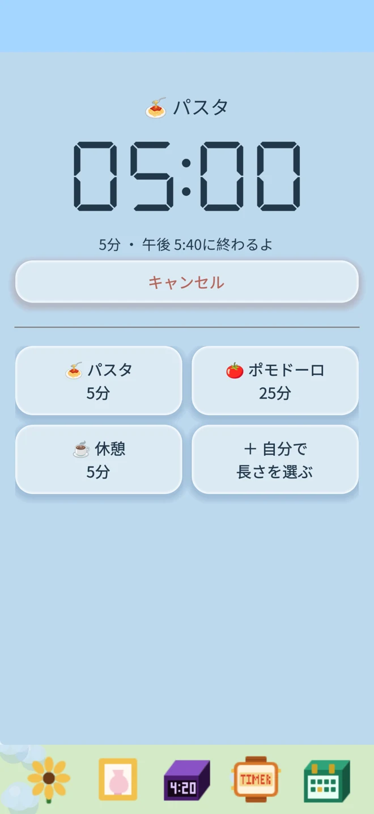
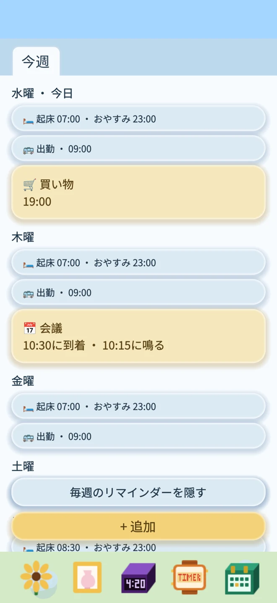
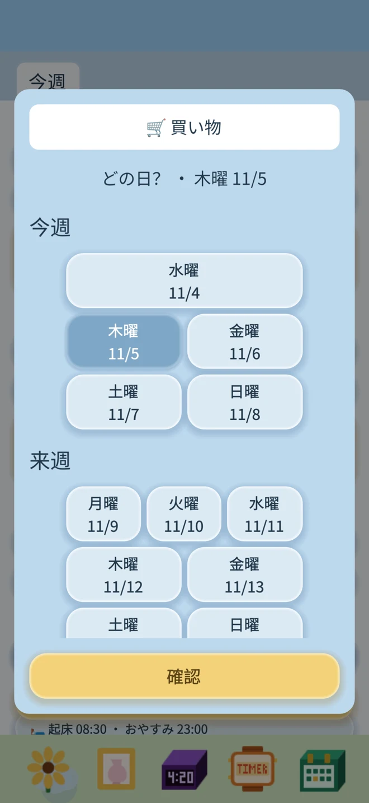
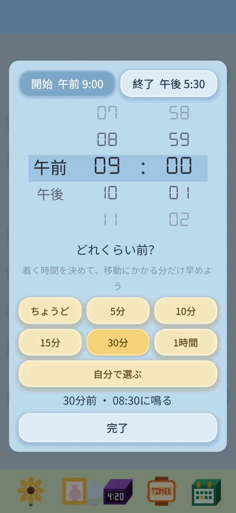

タイマー：よく使う時間を保存して、何度でも
麺をゆでる、お茶をいれる、ひと休み。タイマーを選び、確認してスタート。
よく使う名前と時間は保存して、繰り返し使えます。

タイマーも、予定も、花を育てる楽しみも。
広告なし。サブスクなし。ネット接続不要。すべて、あなたのもの。
アラーム、リマインダー、花の成長記録は端末に保存されます。
App Storeでダウンロード麺をゆでる、お茶をいれる、ひと休み。タイマーを選び、確認してスタート。
よく使う名前と時間は保存して、繰り返し使えます。

今週、来週、その先の予定を週ごとに確認。青は毎週のリマインダー、黄色は一度だけのお知らせです。



自分だけの花を育てよう
ひまわりと蘭から選び、好きな鉢と組み合わせて。じょうろをドラッグして水やり、肥料をドラッグして栄養を。
水やりを忘れるとしおれますが、水をあげればまた元気になります。
ロック画面でも
iOS 26のシステムアラームを使用します。アラームの許可が必要です。許可すると、消音モードでもアラームが鳴ります。
タイマーの残り時間はロック画面と対応機種のDynamic Islandに表示でき、終了時には通知でお知らせします。
明日のアラームをセットして、今日の花に水をあげよう。